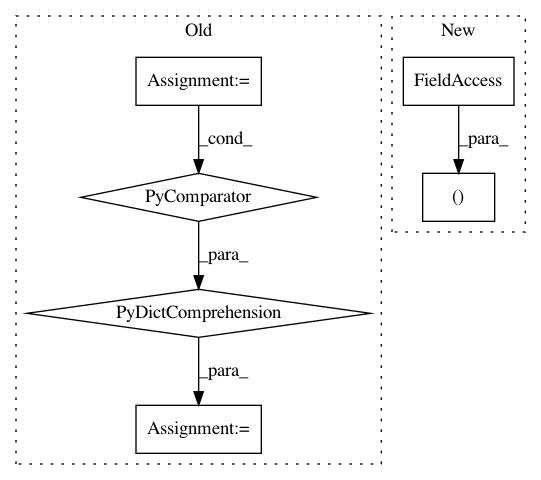

2ab1119596b420cc696a783271d617562ccf7e28,cesium/featurize.py,,featurize_single_ts,#,22
Before Change
channel) as values.
// Initialize empty feature array for all channels
all_feature_lists = {feature: [0.] * ts.n_channels
for feature in features_to_use}
for (t_i, m_i, e_i), i in zip(ts.channels(), range(ts.n_channels)):
feature_graph = generate_dask_graph(t_i, m_i, e_i)
feature_graph.update(ts.meta_features)
After Change
// series in serial.
feature_values[:, i] = dask.async.get_sync(feature_graph, features_to_use)
index = pd.MultiIndex.from_product((features_to_use, range(ts.n_channels)),
names=("feature", "channel"))
return pd.Series(feature_values.ravel(), index=index)
In pattern: SUPERPATTERN
Frequency: 4
Non-data size: 6
Instances
Project Name: cesium-ml/cesium
Commit Name: 2ab1119596b420cc696a783271d617562ccf7e28
Time: 2017-03-29
Author: brettnaul@gmail.com
File Name: cesium/featurize.py
Class Name:
Method Name: featurize_single_ts
Project Name: cesium-ml/cesium
Commit Name: 2ab1119596b420cc696a783271d617562ccf7e28
Time: 2017-03-29
Author: brettnaul@gmail.com
File Name: cesium/tests/fixtures.py
Class Name:
Method Name: sample_featureset
Project Name: CamDavidsonPilon/lifelines
Commit Name: b682d1f8b0e32517805828c8dc15e933d0057335
Time: 2020-07-11
Author: cam.davidson.pilon@gmail.com
File Name: lifelines/fitters/__init__.py
Class Name: ParametricRegressionFitter
Method Name: _fit
Project Name: dit/dit
Commit Name: 46324d0e05c679b2cf50b81289fe2886456f6e51
Time: 2017-09-19
Author: ryangregoryjames@gmail.com
File Name: dit/pid/ibroja.py
Class Name: BROJAOptimizer
Method Name: __init__